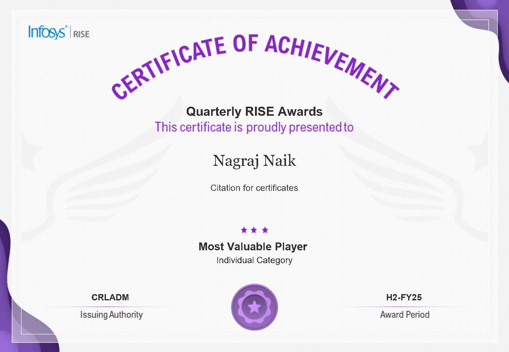
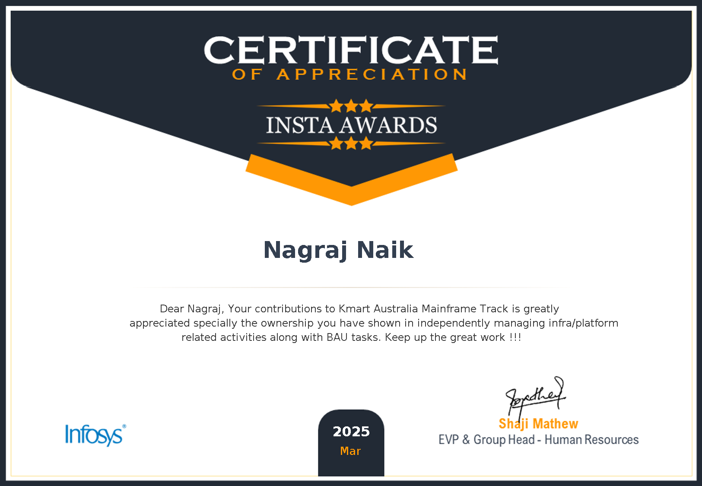

Hello, I'm
Mainframe Modernization & Cloud Engineer with 4+ years of experience in COBOL, JCL, and AWS infrastructure. Specialized in batch operations, incident management, and maintaining high-availability enterprise systems.
Professional Background & Expertise
I'm a Technology Analyst at Infosys with a strong foundation in Mainframe Modernization and Cloud Engineering. My expertise spans across COBOL and JCL development, batch job operations, and Micro Focus Enterprise Server support.
I specialize in incident management, abend analysis, SQL development, and AWS infrastructure. With a proven track record of improving batch stability, reducing failures, and maintaining high availability for enterprise-scale systems, I bring both technical depth and operational excellence.
Career Journey & Key Achievements
Development and enhancement of Modernized mainframe workloads running on Micro Focus Enterprise Server, including COBOL/JCL development, production support, and AWS cloud operations.
Professional Credentials & Achievements
Amazon Web Services
May 2024 - May 2027
ID: bb81e481751341a68ed3a0b5df8543f3
Amazon Web Services
April 2025 - April 2028
ID: 001d0e33a51841e7ba9c2216df4f2c84
Infosys
May 2024
Infosys
October 2024
Achievements & Honors

Infosys
H2-FY25
Recognition for being the Most Valuable Player in the Individual Category

Infosys
March 2025
Recognition for outstanding contributions to Kmart Australia Mainframe Track, independently managing infra/platform activities and BAU tasks
Download or View My Complete Resume
Feel free to reach out for collaborations or opportunities